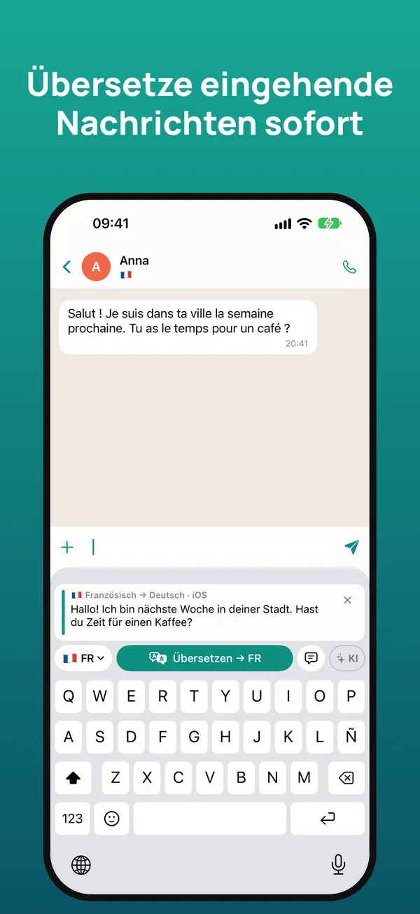
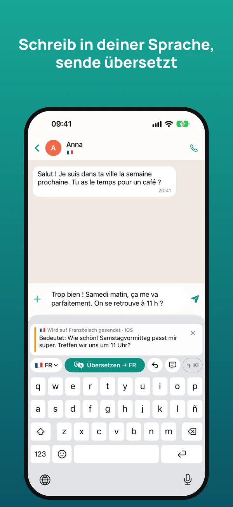
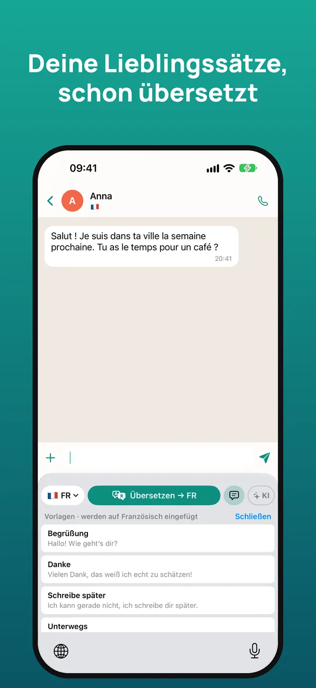
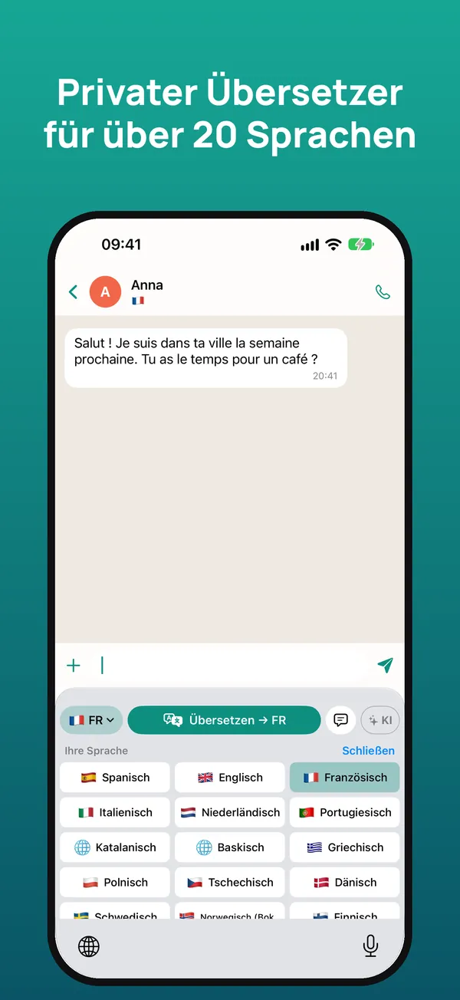

Die Übersetzer-Tastatur für Chats in jeder Sprache
Lies, was man dir schreibt, in deiner Sprache und antworte in ihrer – direkt in WhatsApp, Telegram, Instagram oder jeder anderen App. Die Übersetzung passiert auf deinem iPhone.
7 Tage kostenlos testen · iPhone mit iOS 26 oder neuer

So funktioniert es
Halte die empfangene Nachricht gedrückt und tippe auf „Kopieren“. Die Tastatur übersetzt sie sofort in deine Sprache.
Schreib deine Antwort wie gewohnt und tippe auf „Übersetzen“: Sie wird durch die Übersetzung ersetzt, bereit zum Senden.
Darunter siehst du, was deine Nachricht in deiner Sprache sagt – so sendest du sie mit gutem Gefühl.



Alles, um mit allen zu sprechen
Verstehe empfangene Nachrichten und antworte in der Sprache deines Gegenübers.
WhatsApp, Telegram, Instagram, Messenger, E-Mail … Sie funktioniert überall, wo du tippst.
Behält den Ton und die passende Anrede (du oder Sie) bei und nutzt den Chatverlauf.
Apples Übersetzung direkt auf dem iPhone: offline, ohne Werbung, ohne Tracking, ohne Konto.
Verbinde deinen eigenen Claude-, Gemini- oder ChatGPT-Schlüssel für noch natürlichere Übersetzungen.
Vorlagen, die schon übersetzt eingefügt werden, und ein Glossar für Namen und Ausdrücke, mit iCloud.
Über 20 Sprachen
Deutsch, Englisch, Spanisch, Französisch, Italienisch, Portugiesisch, Niederländisch, Katalanisch, Baskisch, Griechisch, Polnisch, Tschechisch, Dänisch, Schwedisch, Norwegisch, Finnisch, Rumänisch, Ungarisch, Ukrainisch, Russisch, Türkisch, Arabisch, Chinesisch und Japanisch.
Preise
Mit der Tastatur zu tippen ist immer kostenlos. Jederzeit in den iPhone-Einstellungen kündbar.
Häufige Fragen
Funktioniert sie mit WhatsApp?
Ja. Sie funktioniert in jeder App, in der du tippst: WhatsApp, Telegram, Instagram, Messenger, Gmail, LinkedIn und mehr.
Ist sie kostenlos?
Du bekommst 7 Tage gratis. Danach 2,99 € pro Monat oder 19,99 € pro Jahr oder einmalig 39,99 €. Tippen ist immer kostenlos.
Warum braucht sie „Vollen Zugriff“?
iOS verlangt das, damit die Tastatur die kopierte Nachricht lesen, die KI nutzen und Einstellungen mit der App teilen kann. Sie speichert oder sendet nicht, was du tippst.
Funktioniert sie offline?
Ja. Mit Apples Übersetzung wird nach dem Laden der Sprachen direkt auf dem iPhone ohne Verbindung übersetzt.
Welche Sprachen übersetzt sie?
Über 20, darunter Englisch, Spanisch, Französisch, Italienisch, Portugiesisch, Niederländisch, Chinesisch und Japanisch.
Gibt es eine Android-Version?
Derzeit gibt es sie nur fürs iPhone mit iOS 26 oder neuer.
In einer Minute startklar
- Installiere die App und öffne die Einführung.
- Aktiviere in den iOS-Einstellungen → Tastaturen die Tastatur und „Vollen Zugriff erlauben“.
- Halte in einem beliebigen Chat 🌐 gedrückt und wähle die Tastatur.
- Kopiere die empfangene Nachricht, um sie übersetzt zu lesen; schreib in deiner Sprache und tippe auf Übersetzen.
Brauchst du Hilfe? Schreib uns an soporte@sherpastime.com.